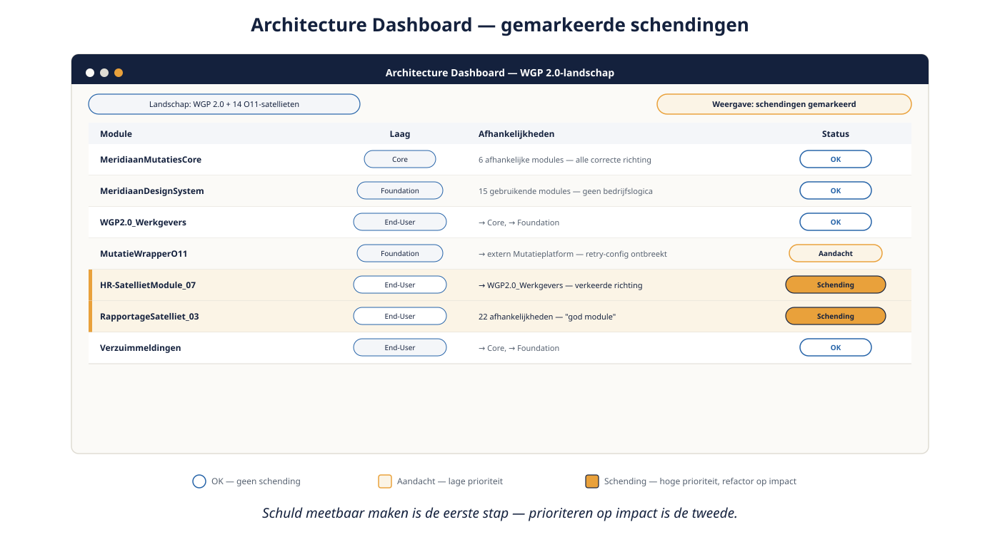

Deel 20 — Technische schuld: review, architecture dashboard, refactoren
Slidedeck · Ductus-cursus OutSystems · Niveau 2 — Professional · deel 20 van 30 · 12 slides
Slide 1 — Title: OutSystems: Vakbekwaam
OutSystems: Vakbekwaam
Deel 20 — Technische schuld: review, architecture dashboard, refactoren
Zelfstandig aanbiedbaar
Slide 2 — Statement: Low-code elimineert technische schuld niet.
Low-code elimineert technische schuld niet.
Het verplaatst waar hij zich verzamelt.
Slide 3 — Bullets: Wat het concreet betekent
Wat het concreet betekent
- Gedupliceerde logica ondanks de Core-laag-discipline
- Afhankelijkheden die de vierlagenregel schenden
- Schermen zonder correcte autorisatie
- Verborgen N+1-patronen, nog niet opgemerkt
Slide 4 — Bullets: Zes jaar organische groei
Zes jaar organische groei
- Veertien O11-satellieten: "het werkte toen"
- BPT-processen die niemand meer volledig doorgrondt
- Sluiproutes die niemand als zodanig herkende
Slide 5 — Section: Het Architecture Dashboard
Het Architecture Dashboard
Slide 6 — Bullets: Schuld meetbaar maken
Schuld meetbaar maken
- Architecturale schendingen opsporen
- "God modules" met te veel afhankelijkheden
- O11: dashboard + handmatige review; ODC: dieper geïntegreerd

Slide 7 — Opdracht: Opdracht 20.1 — Hoog of laag prioriteit?
Opdracht 20.1 — Hoog of laag prioriteit?
Drie schuld-situaties uit het eigen landschap.
→ Werkboek 20.1
Slide 8 — Opdracht: Baan A / Baan B
Baan A / Baan B
A — Architecture Dashboard-analyse in O11
B — Zelfde analyse in ODC
→ Werkboek, eigen baan — analyseer je eigen gebouwde landschap
Slide 9 — Statement: Refactor op impact.
Refactor op impact.
Niet op zichtbaarheid.
Slide 10 — Opdracht: Reflectieopdracht 20.2
Reflectieopdracht 20.2
Waarom weegt een verborgen Core-fout zwaarder dan een lelijke, geïsoleerde workaround?
→ Werkboek 20.2
Slide 11 — Bullets: Kernpunten deel 20
Kernpunten deel 20
- Technische schuld verzamelt zich ook in low-code
- Architecture Dashboard maakt schuld meetbaar, in beide platformen
- Prioriteer op potentiële impact, niet op zichtbaarheid
- Core-schendingen wegen zwaarder dan geïsoleerde workarounds
Slide 12 — Section: Volgende deel: Capstone niveau 2
Volgende deel: Capstone niveau 2